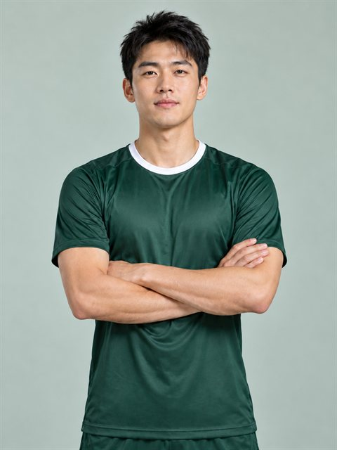
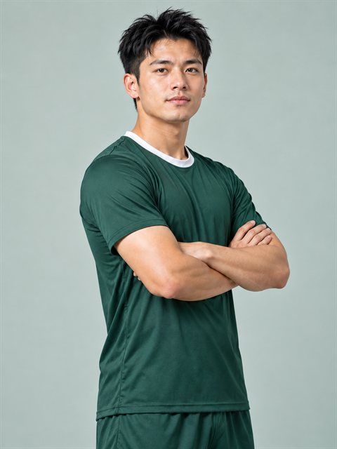
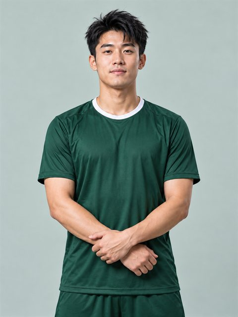

AI 形象照抱膀定妆照 · 个人工具
演示版
- 已接入图生图（参考图）模式：用你上传的脸重新拍一张抱膀定妆照
- 身高体重：第 01 步可填身高体重，也可以直接选体型（偏瘦／匀称／结实／微胖／偏胖），用来生成不同的肩宽、胸背厚度和腰腹轮廓，避免所有人身材都一个样；不填就按你照片里的真实身材还原
- 参考图临时上传，服务端读取后删除，不写入球员档案
- 有球衣：上传球衣设计图或球衣照片，系统把“你的脸 + 球衣图”拼成一张参考板，让模型还原主色、肩部拼接、袖口与侧身条纹、领口和左胸队徽
- 没球衣：直接选颜色样板（10 色 × 3 款式），每张卡片都用你选的颜色画出球衣样子，插肩、侧条效果能直接看到；不送球衣图，出图最稳，球衣上一定不会有文字、号码或队徽
- 球衣上的文字、号码默认留空（第 02 步可勾选让 AI 试写）：AI 拼字不稳定，正式功能会用模板叠字
- 成品不烧「AI生成」角标：Seedream 4.5 在源头关掉水印；图片由 AI 生成这一点仍在本页标注
- 出图模型：本页当前只开放 Seedream 4.5；模型清单由平台后台上架，混元 3.5 与 Seedream 5.0 Flash 暂未上架，页面不显示
- Seedream 4.5 竖版 2K，服务端抠图后返回透明 PNG，保留原始尺寸
01本人照片裁到脸和肩膀
拖动调整位置 · 用滑杆调整大小
缩放
身高体重与体型不填就按照片里人物的真实身材还原
只影响肩宽、胸背厚度、手臂粗细和腰腹轮廓，脸和五官不变；同一个姿势换个体型，出来的身材就不一样。
02球衣有球衣 / 没球衣
已取主色
选颜色，再挑款式卡片就是出图后的球衣样子，没有文字、号码和队徽
03选择姿势预设实拍示例

正面抱膀标准定妆
半侧抱膀更立体
低位抱膀放松站姿04出图模型
透明 PNG · 预计 30–75 秒
生成后在此预览
技术边界（给产品看）
当前链路：页面 →
当前实现只送 1 张参考图，所以选了球衣图时，前端把“人脸 + 球衣图”拼成一张参考板再送模型（Seedream 原生支持多图，后续可把脸和球衣拆成两张分别送）；当前提示词按结构逐项还原主色、肩部拼接、袖口与侧身条纹、领口和左胸队徽，胸前文字和号码一律留空，交给后期模板叠加（AI 拼字会乱码）。
02 步按“有球衣 / 没球衣”分两态：有球衣才上传图片并拼参考板；没球衣直接选颜色样板，色板和款式卡片都是可视化的（
03 步的三张姿势缩略图是实拍示例（
04 步的模型清单来自后端目录（
正式上线还需：会话鉴权、按次扣费、生成失败退回、人脸上传单独同意与“删除我的照片”入口、AI 生成标识。
/aiPortraitDemo → Seedream 4.5（百度云 VOD 广州网关「BS模型」doubao-seedream-4-5，1728×2304 JPEG，一次 1 张，需配置 BAIDU_VOD_KEY）。混元影像 3.5（TokenHub）与 Seedream 5.0 Flash（火山方舟）的接入代码与凭据都保留在目录里，但已标 hidden：后端不下发、请求直接拒绝，页面看不到也选不到。当前实现只送 1 张参考图，所以选了球衣图时，前端把“人脸 + 球衣图”拼成一张参考板再送模型（Seedream 原生支持多图，后续可把脸和球衣拆成两张分别送）；当前提示词按结构逐项还原主色、肩部拼接、袖口与侧身条纹、领口和左胸队徽，胸前文字和号码一律留空，交给后期模板叠加（AI 拼字会乱码）。
02 步按“有球衣 / 没球衣”分两态：有球衣才上传图片并拼参考板；没球衣直接选颜色样板，色板和款式卡片都是可视化的（
jerseySvg() 用当前颜色画前视图，插肩白袖、侧条白条实时联动），只把样板色和款式描述写进提示词（不送球衣图），因此球衣上不会出现任何文字、号码或队徽，适合直接当球员标准照使用。03 步的三张姿势缩略图是实拍示例（
assets/pose-presets/*.jpg，480×640、每张约 32KB），与后端姿势文案同源，前端只做等比缩放展示。04 步的模型清单来自后端目录（
GET /aiPortraitDemo），前端只能选后端下发的 key；上架哪些模型、默认哪个、是否允许客户自选，由平台后台写 platform_settings/aiPortraitModels，但标了 hidden 的模型不会被这份配置重新打开。Seedream 4.5 走百度云 VOD 广州网关 POST https://vod.gz.baidubce.com/v1/images/generations（OpenAI Image Generations 规范、参数透传方舟，模型名不带日期后缀），服务端配置 BAIDU_VOD_KEY，尺寸可用 SEEDREAM45_SIZE 覆盖；实测该网关对 4.5 不接受 output_format（会返回 400 InvalidParameter），默认不发送，确需强制时可用 SEEDREAM45_OUTPUT_FORMAT 打开。Vidu Q2 已按确认下架，不再提供。正式上线还需：会话鉴权、按次扣费、生成失败退回、人脸上传单独同意与“删除我的照片”入口、AI 生成标识。